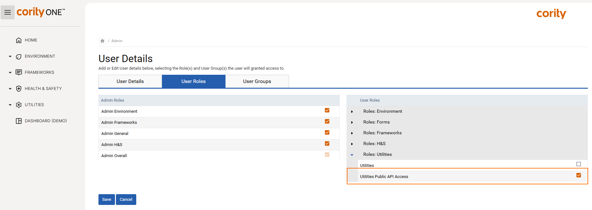

You can control which users have access to the API, and what they can use it for.
Only users with a specific SPM role can use the API. You need to assign users the “Utilities Public API Access” role.

Users have the same permissions they have in SPM. If they only have access to certain nodes and views in SPM, then they will only have access to those via the API too.